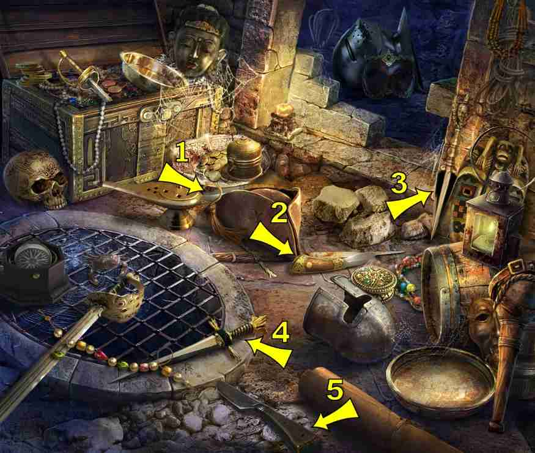
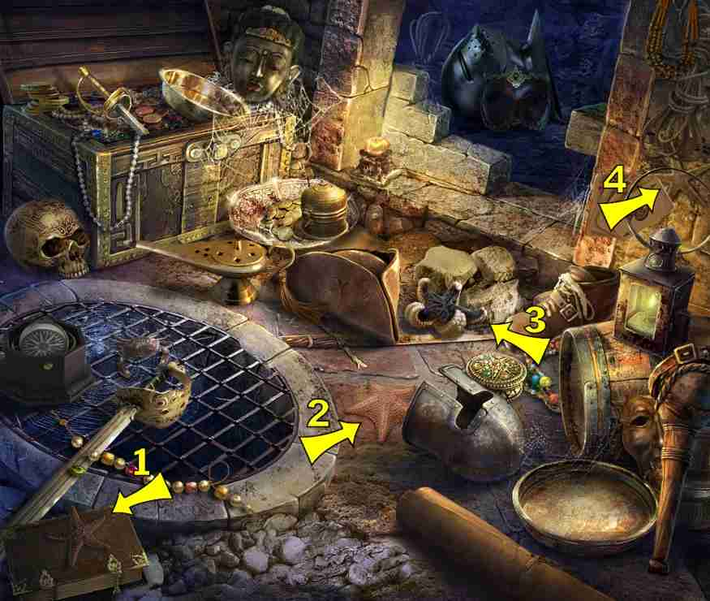
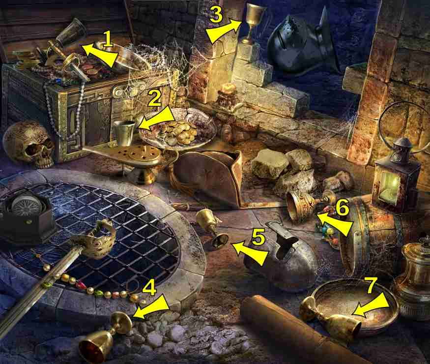

3 items:
- Carved in bricks below alcove
3 items:
- Carved into lower left side of alcove frame
4 items:
- Hanging on left side of alcove
4 items:
- Right corner of alcove opening
- In the dish in the corner between chest and alcove
4 items:
- Etched in the stone on second brick down left side of alcove
6 items:
- Shadow on the scroll in lower right

6 items:
Formerly "Fan"
- In dish in front of chest
1 items:
- On the left wall of the alcove, in silver color
6 items:
- Hanging in upper right corner

4 items:
- Gold leaf on chain (draped over angel wing) in treasure chest

3 items:
- In the dish in corner between chest and alcove
- Inside the lantern on the barrel
6 items:
- Gold ring around very top of lantern which sits on barrel
- Sitting on top of left brick of alcove opening
- In center of grate, sometimes on sword (silver ring, red stone)
- In the dish between the chest and the alcove (gold band showing)
4 items:
- Etched in the floor right of grate
6 items:
- Etched in brick on right side of alcove

